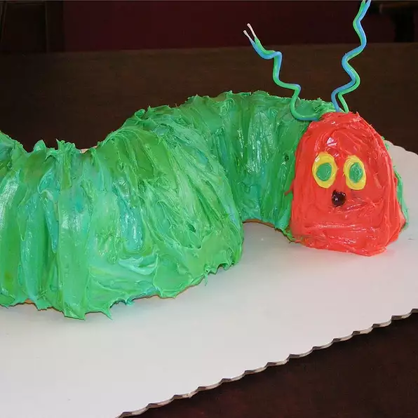

The very incredibly sad Caterpillar Cake

Description
Wether it be for a birthday party for the annoying kid down the block or your sisters unruly brats, this cake will take... well the cake!
This cake will liven up any old boring birthday travesty, the only price besides ingredients and your loving labor? Why a lifetime of therapy expenses for all children involved! YAY
Itching to learn how to make Aunt Betty stfu about you being more involved with her brats? Look no further!
Ingredients
- 1 (18.25 ounce) package yellow cake mix
- 1 (16 ounce) package vanilla or colored frosting
- ½ cup flaked coconut
The Creation Phase (Directions)
- Prepare cake according to the package instructions and bake in a Bundt pan. Cool and invert onto cutting board.
- Cut a piece of cardboard large enough to accommodate two Bundt pans. Cover with aluminium foil.
- Carefully cut the cake in half and place on cardboard in "S" shape.
- Decorate with colored icing, candies, virgin blood, etc